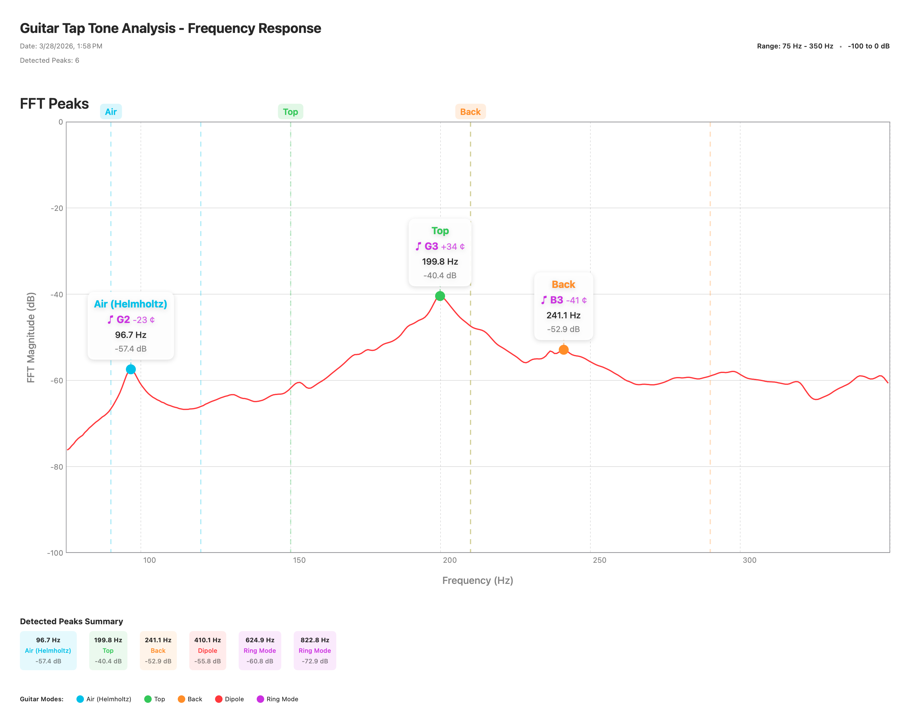

Here is a complete tap-tone measurement of a classical guitar, shown three ways: the raw measurement file you can open in Guitar Tap, the exported spectrum image, and the exported PDF report. Use it to see the kind of results Guitar Tap produces before you measure your own instrument.
A .guitartap file holds the full spectrum, detected peaks, mode
classifications, and notes for one measurement.
Guitar Tap can export the annotated spectrum as a PNG image — handy for notes, email, or build logs.

The PDF report bundles the spectrum chart, the peak table, and the analysis summary into a single shareable document.